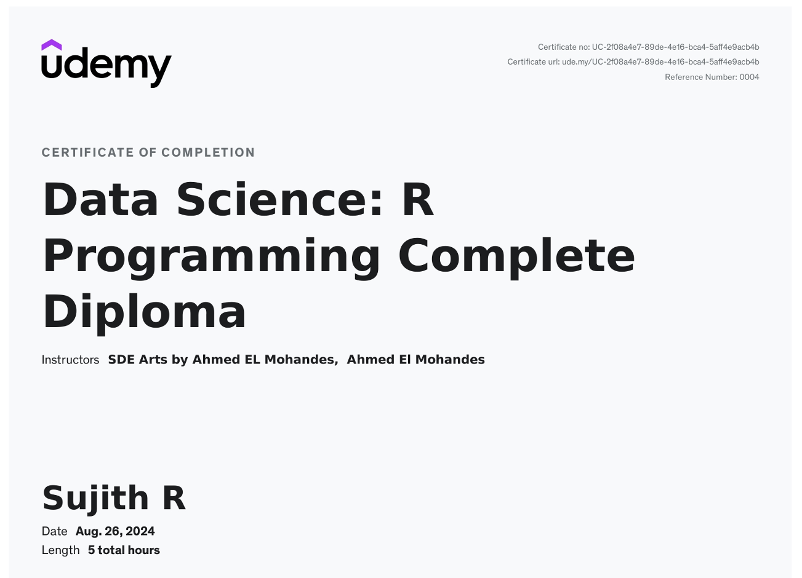

I'm a passionate Data Analyst transitioning into the world of Data Science. With a strong foundation in data analysis, I’ve developed a deep interest in transforming complex data into actionable insights that drive business decisions. Over the years, I’ve honed my skills in statistical analysis, data cleaning, visualization, and machine learning. I’m proficient in tools like Python, R, SQL, and various data visualization platforms, with hands-on experience in projects like "A study on the impact of online gaming among college students", and I’m always eager to learn new technologies and methodologies to stay ahead in the ever-evolving field of data science.
Download CVSujith R is a Data Science Enthusiast with a strong foundation in Statistics, expert in Machine Learning, Data Analysis, and Data Visualization. He has worked on projects like "A study on impact of online gaming among college students," and holds technical skills in Python, 2D and 3D animation, C, R-Programming, and is currently pursuing his Masters in Data Science. His goal is to deliver high-quality work that exceeds expectations. With innovative thoughts and lifelong learning, he strives to grow personally and professionally.
View MoreSkilled in creating dynamic and user-friendly websites using HTML, CSS, and JavaScript. From intuitive interfaces to robust back-end systems, delivering high-quality solutions tailored to your needs.
Dedicated learner of Canva Designer, actively exploring features and trends to provide quality design solutions.
Passionate about capturing quality images with ethical practices respecting privacy and environment.
Assisting clients in safeguarding mobile devices by customized, proactive security solutions.
Offering professional video editing for compelling storytelling with seamless transitions and visuals.
Connecting cultures and businesses through expert translation and interpretation services.

Engaged in predictive analysis projects focusing on restaurant ratings predictions using Python and visualization tools. Gained experience in full ML development lifecycle and AI-driven solutions.
Led initiatives improving student experience and organized the International Conference for Renaissance on Sports (ICRS 2024).
Managed student council finances and coordinated musical performances for the Department of Data Science.
HTML5
CSS3
JavaScript
Python
MongoDB
Github
C , C++ Programming
R-Programming
Java
80%
84%
88%
88%